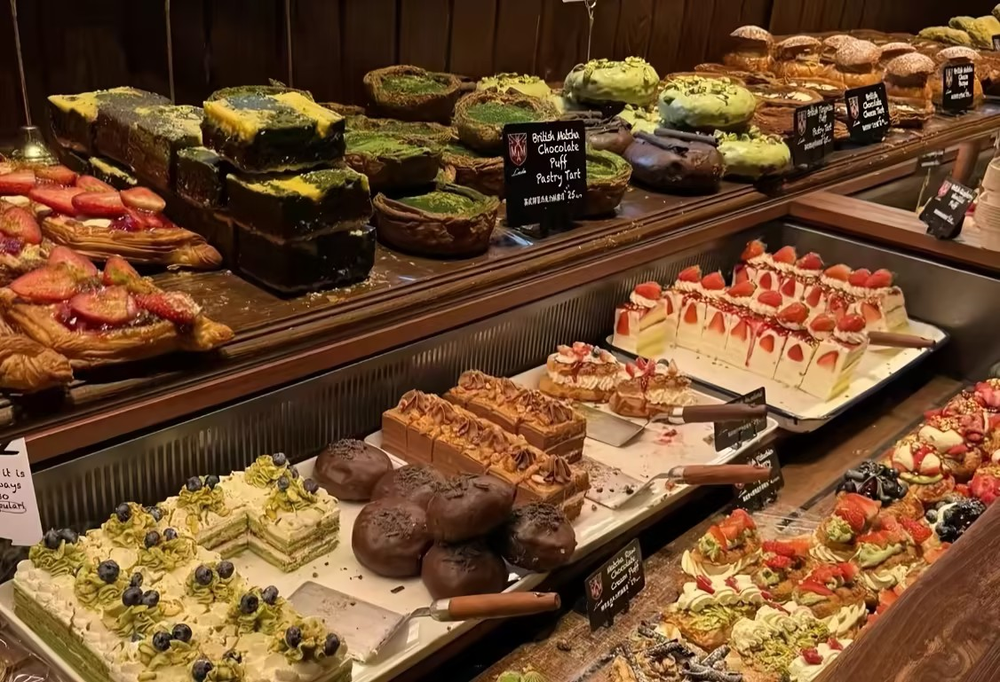
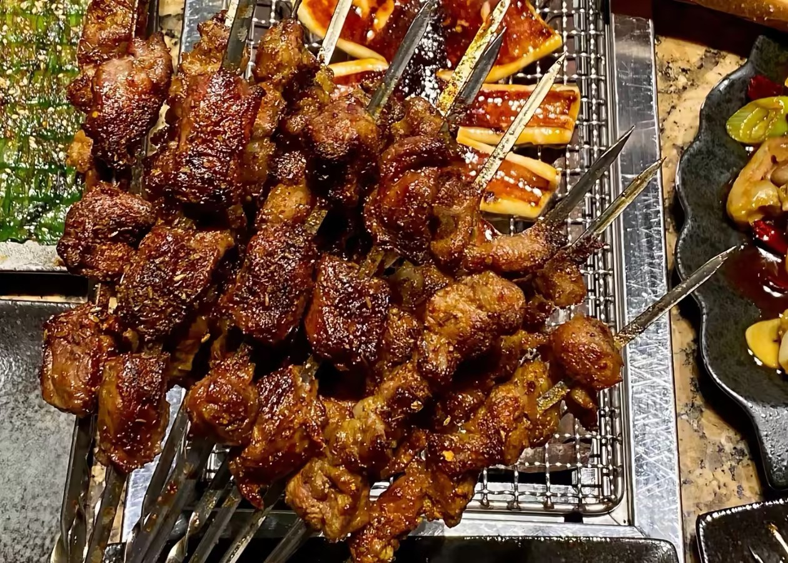
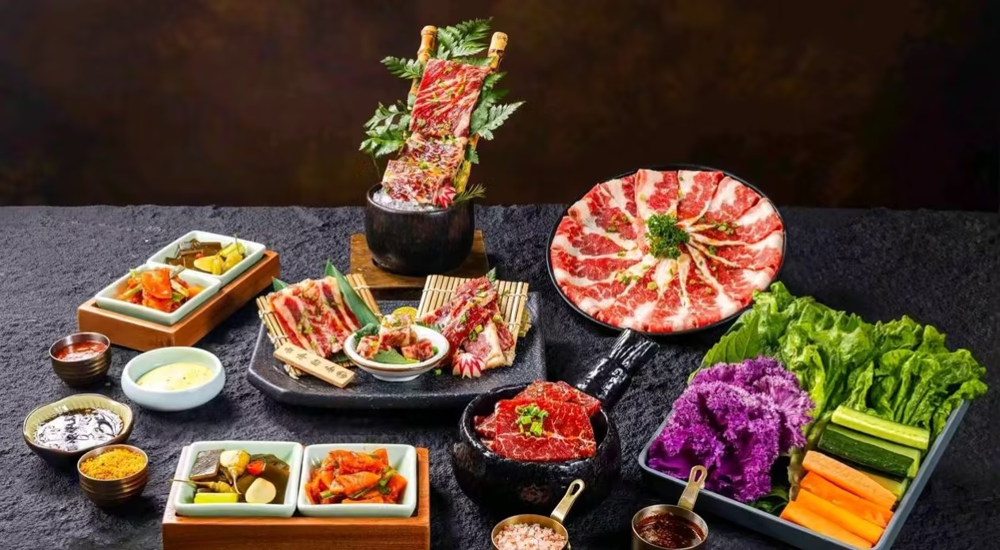
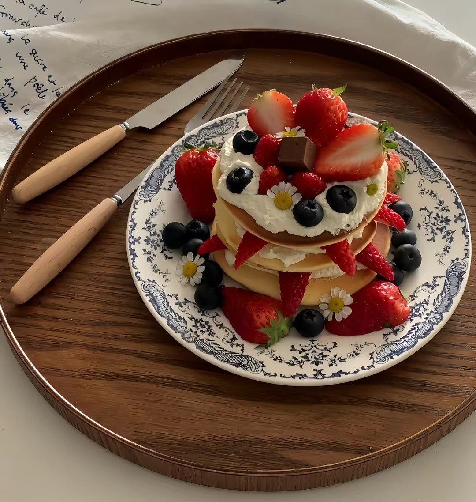

每周更新 3 家宝藏小店 · 不吹不黑 · 真实探店
上图下文布局 · 每家店一张主图 + 简短介绍
浓厚豚骨汤底，面条筋道，深夜食堂首选。
牛油锅底香到跺脚，毛肚必点，人均 80。

现烤可颂外酥里软，早上 8 点就排队。

肉串大块实在，烤鸡架是招牌，适合撸串。
左图右文 / 右图左文交替布局 · 详细介绍两家招牌店

📍 地址：和平区太原街 12 号
⏰ 营业时间：11:00 - 23:00
厚切牛舌、雪花牛肋条是店里的灵魂，炭火现烤，油脂在烤盘上滋滋作响。老板娘亲自腌的秘制酱料，解腻又提香。
查看详情
列表布局 · 根据 200 位读者投票统计